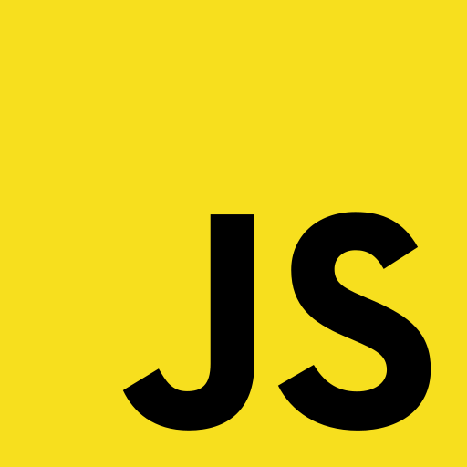
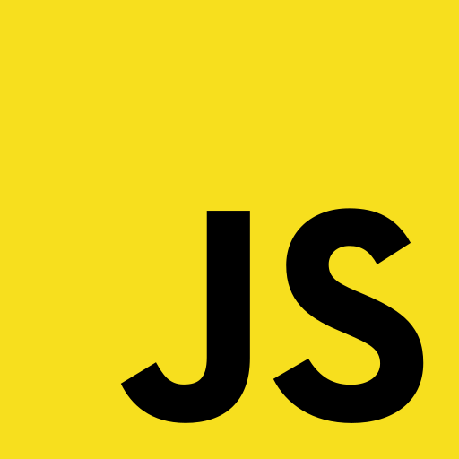

Overview
In this project, Tina creates the website you are currently on! I explain the UX/UI decisions that I considered when creating this website while also detailing my work experience and projects.
Objective
In efforts to strengthen my UX/UI skills and my techanical background in HTML/CSS/javascript, I wanted to create a website that visually encapsulates my creativity and character. Additionally, I wanted to showcase my experiences with more detail as well as my other hobbies. Through my personal portfolio, I hope that recruiters, students, and other software developers understand who I am as a person and the skills I can bring to a workplace.
Project
For the past month, a majority of my time was set aside to the design aspects of my website. Before coding anything at all, I know I wanted to create different versions of my website via Figma.
*This is a small portion of my thought process when I initially thought of my website.
The most important perspective I had in mind was creating a website that reflects who I am in an original way. Thus, I didn't want to stick with a plain white background and having all my different sections on one page.
Although I had hundreds of ideas in mind, I wanted to stick with one of my favorite subjects: space. As a result, I used a space-like theme throughout my entire website including shooting stars, rocketships, and space-themed colors (purple, blue, black, and yellow) which you might have noticed! Having this theme in mind really helped solidify my ideas into reality especially since I didn't know what direction I wanted to go towards.
While creating different components of my website, I consistently considered accessibility, readibility, and consistency for all types of viewers. Thus, I simplified my designs and took advantage of negative space to make sure texts don't clash. Although I had a lot of room to express my creativity, I also wanted to make this project look professional especially to recruiters.
Conclusion
Overall, this project solidified my comprehension of HTML/CSS/JavaScript drastically. One of my goals in the summer of 2023 was to improve my web development skills to potentially pursue a career in web development. Through this website, I hope you learnt more about my creativity, experiences, and individuality. Feel free to connect with me via linkedln, email, or on the contact me page!


 
